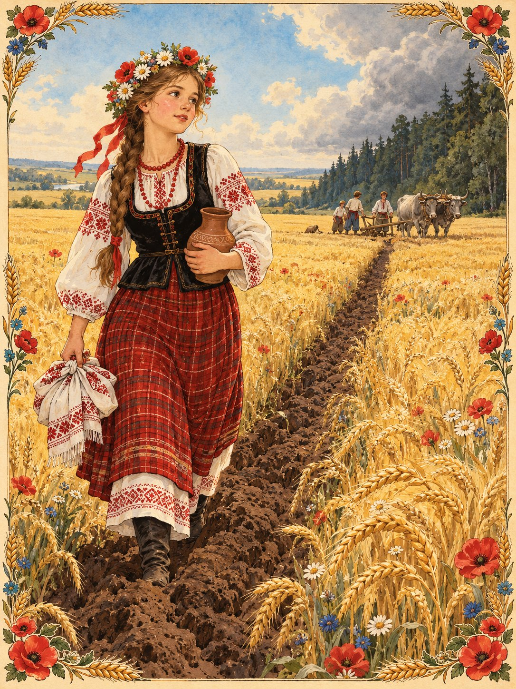

Жили собі в одному селі чоловік із жінкою. Мали вони шестеро синів, дужих і роботящих, та одну доньку, гарну, як весняна калина. Жили дружно, хліб сіяли, худобу пасли, і всього в них було доволі.
Якось улітку сини пішли в далеке поле орати, а сестра мала опівдні принести їм обід. Щоб дівчина не заблукала, брати проорали плугом довгу борозну від самого поля аж до рідного двору.
Та неподалік, у темному лісі, жив лютий Змій. Він підгледів усе, потай засипав братову борозну і проорав свою, що вела просто до його кам’яного палацу.
